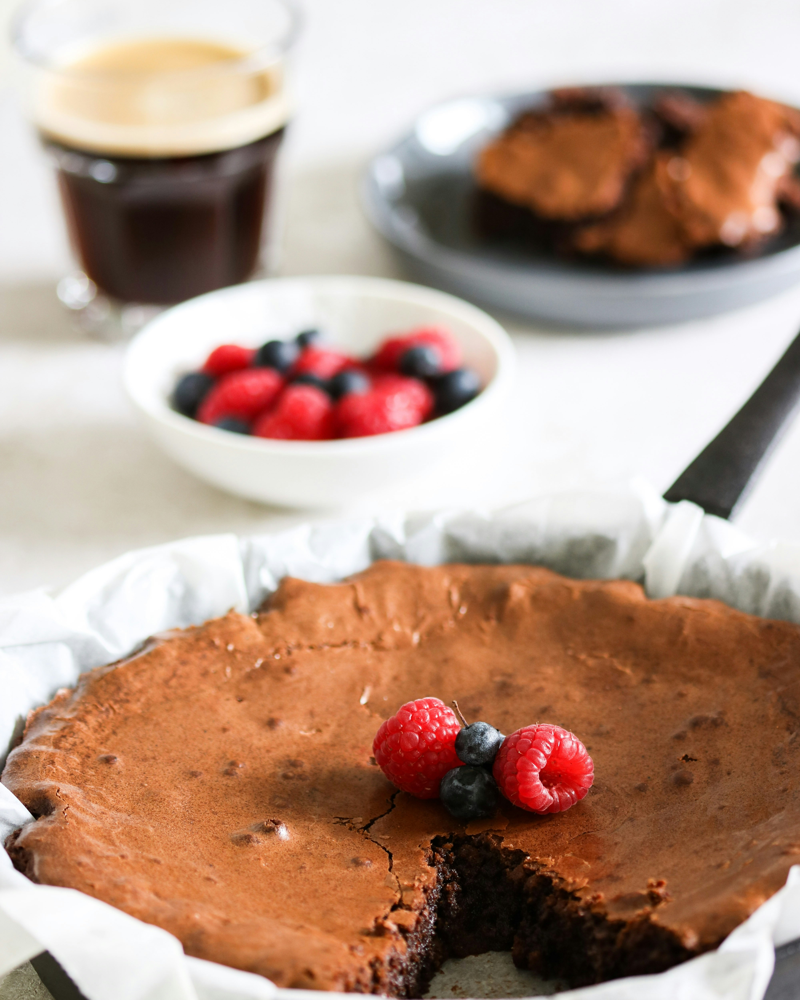

Flourless Chocolate Cake
Home

Description
A perfect gluten free dessert! This is so rich and decadent, and loved by everyone!
Using a good eating chocolate will make the best results. You can substitute semisweet for bittersweet.
If you make this, be prepared for it to be requested all of the time!
Ingredients
- 8 ounces (250g) bittersweet chocolate, chopped
- 2 oz unsweetened chocolate, chopped
- 1/2 cup (125ml) unsalted butter
- 6 eggs separated
- 1 cup (250 mL) sugar
Steps
- Preheat oven to 350F/180C
- Line the base of an 8-inch (20cm) springform with parchment paper
- In a heavy pot, place chocolates and butter. On medium low heat, melt very slowly,
stirring constantly until smooth. Set aside.
- Place egg yolks in a small bowl. With an electric mixer slowly add 1/2 cup (125 mL) sugar.
Keep beating until tripled in volume and the beater leaves a trail in the mixture.
Fold in the chocolate mixture.
- In a separate large bowl with clean beaters, whisk egg whites until foamy.
Slowly add remaining 1/2 cup (125 mL) sugar and whisk until egg whites are thick,
glossy, and hold stiff peaks. Stir one quarter of beaten egg whites into chocolate
mixture and gently fold in remaining egg whites.
- Spoon mixture into prepared cake pan and bake for 35 to 40 minutes or until cake
is slightly wiggly in centre and has a crust on top. It is important not
to over bake the cake.
- Cool on wire rack for 30 minutes then unmould onto a plate. Chill.
Serves 8 to 10